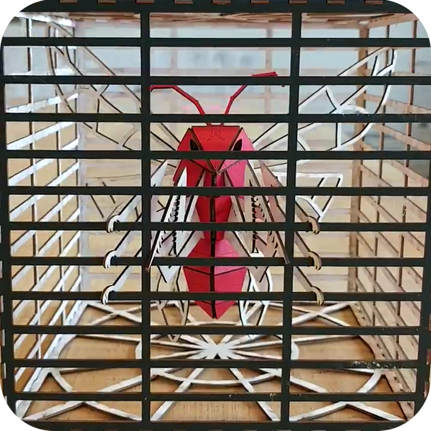
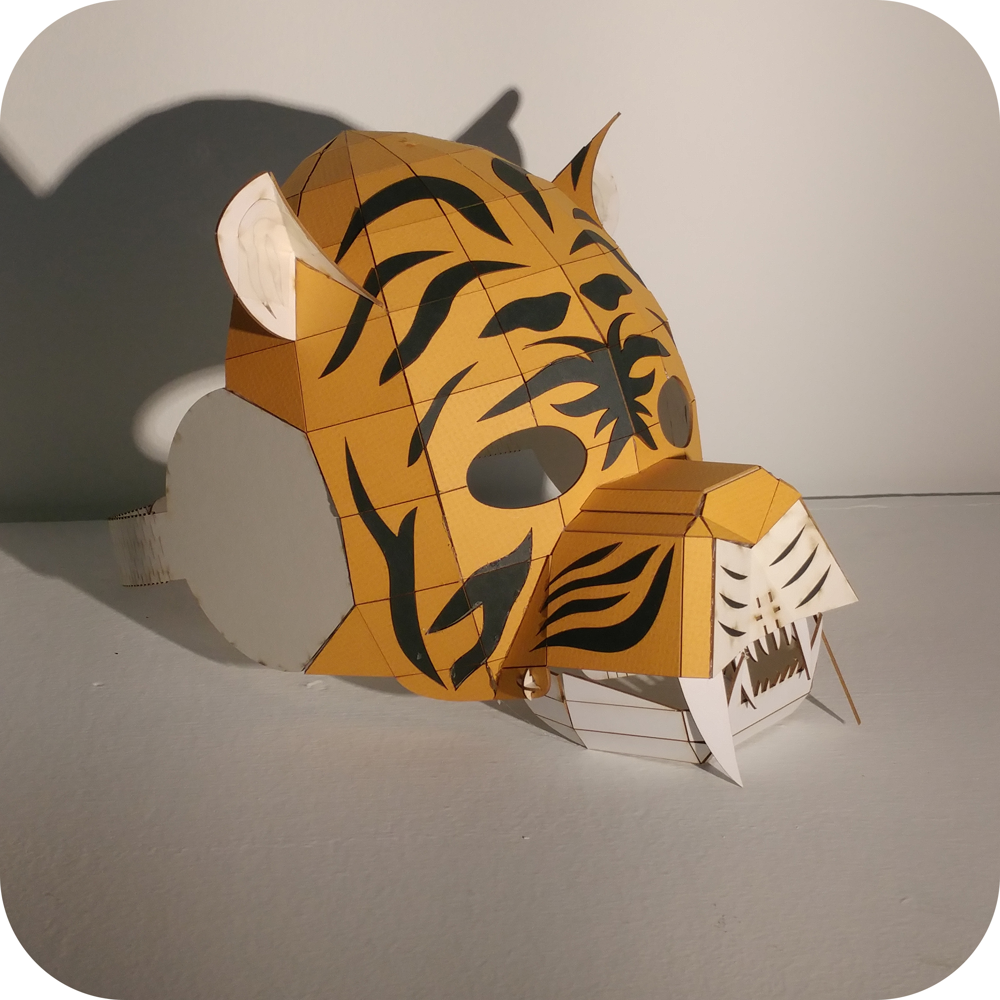
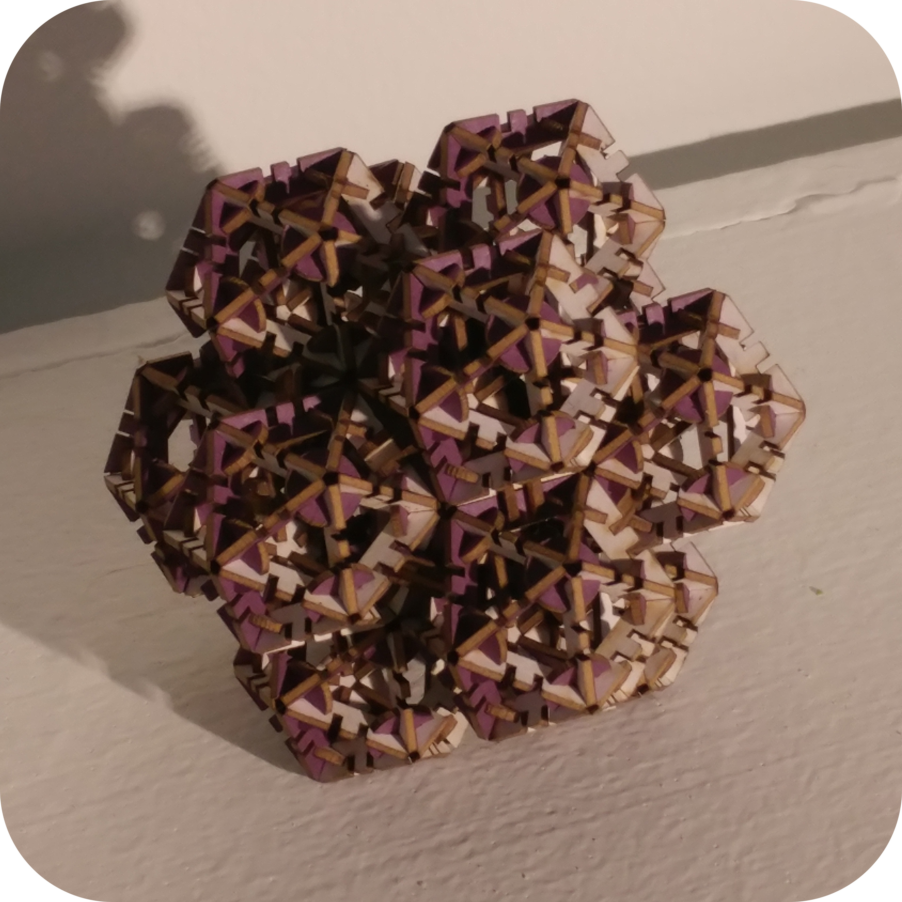
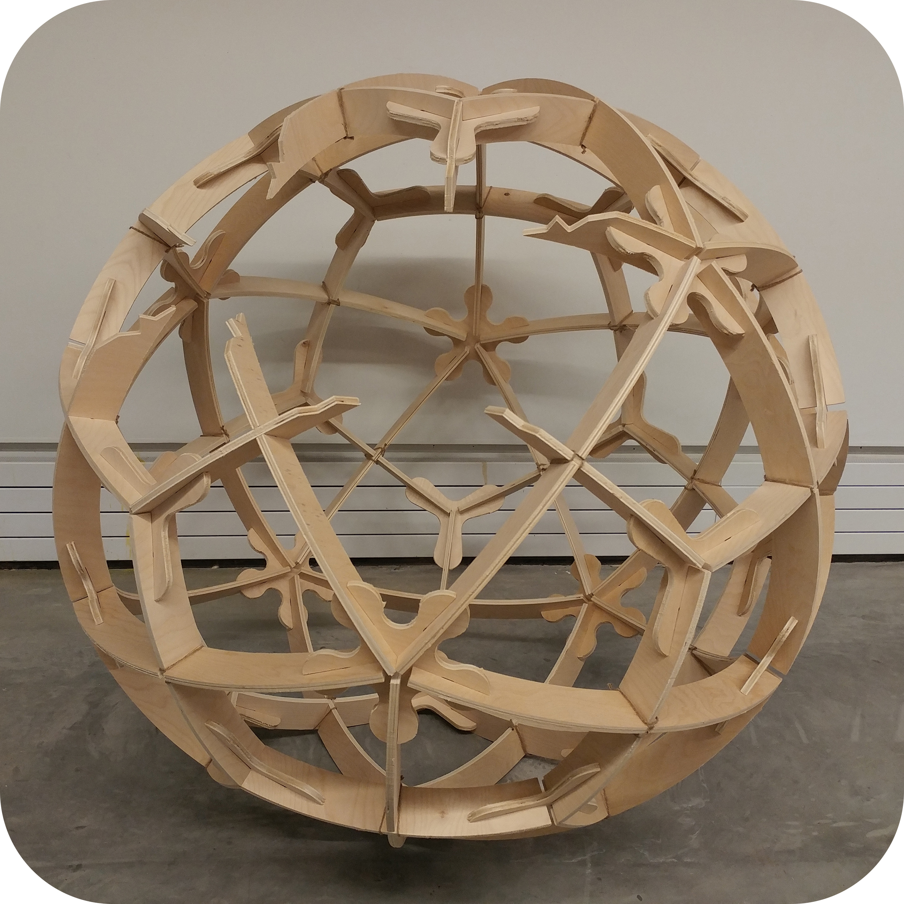
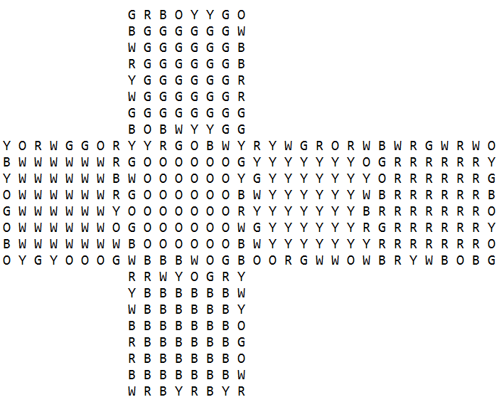
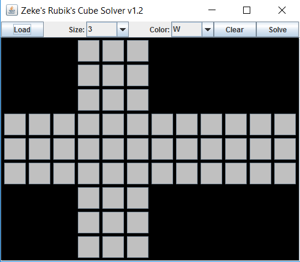
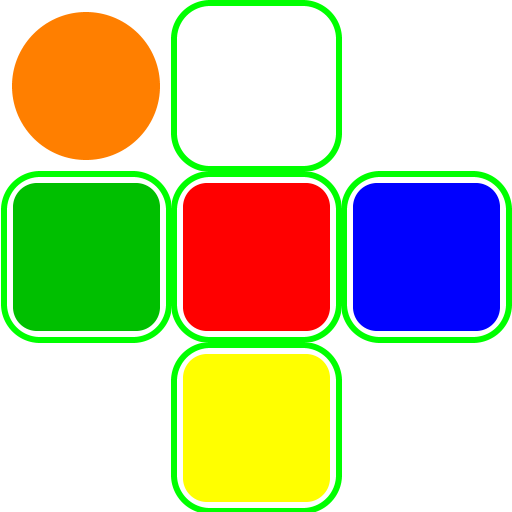

<Bug Box> |

<Tiger Mask> |
This was our first 3D project: a box that embodied nature in some way. My box was originally the wasp-oid itself, but it became the wasp contained in a cage. |
This project (which can also be found on the home page) is my answer to "make a costume article with the laser cutter". The jaw was posable, and the black stripes were inset into the mask surface, not colored on. |

<2nd Iteration Icosahedron Fractal> |

< Deltoidal Hexecontahedron Egg> |
This was actually a little piece that I did outside of class, but it served as inspiration for my final project (to the right). It's an icosahedron fractal composed of 12 smaller icosahedra. |
This was my final project for the class: a 6' wooden spherical projection of a deltoidal hexecontahedron (a fancy term for a polyhedron consisting of 60 congruent kites). Because the project was to make a piece of furniture that could be inhabited, I removed three intersections so that it became a cracked open egg. |

<Stage 1: Console> |
|

<Stage 2: Java Application> |
|

<Stage 3: Android Application> |
The project started out just in the console of Eclipse, loading up text files that described the state of the cube, attempted to solve them, and then spat out the list of moves and state of the cubes when it was done. This was probably the hardest part of the project, since all the rest was just working out gui and how to generate spreadsheets using a library JExcel, whereas this step included working out how to code the full solving process. |
Once I had coded the full solving procedure, I decided to boost the user interface by actually creating one using JSwing, which didn't take too long. Also at this step, I added the saving functionality to save a set of generated moves in an excel sheet to load later for longer solves. |
Since Stage 2 was finished sometime around the beginning of August, and I had never before attempted making an app, I thought I would give porting this to Android a shot. This took longer than expected, considering all the logic behind Android is Java, so I didn't need to do a total overhaul of my solving algorithms. What took some time was the xml, which I was completely unfamiliar with. Now, while I wouldn't say I'm a master or even adept, I can at least do the bare minimum to flesh out an app. |